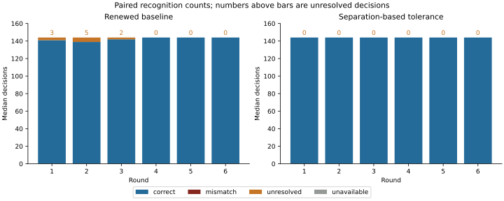
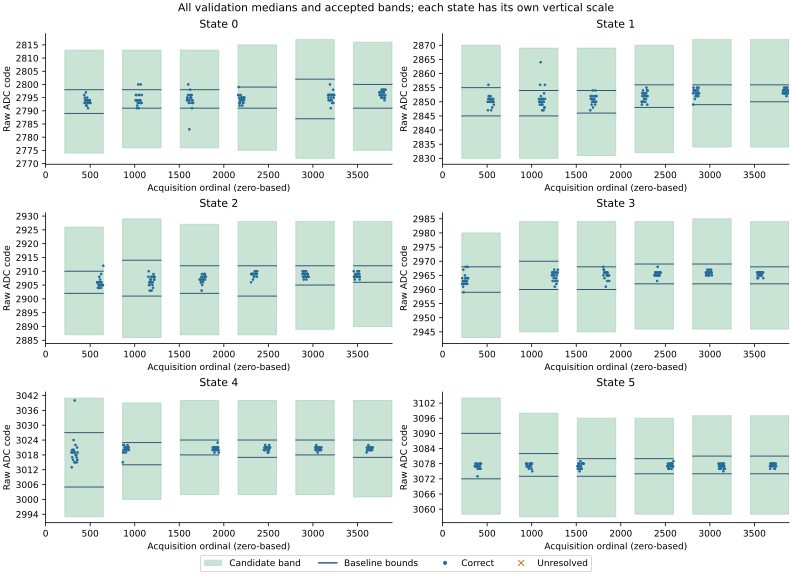
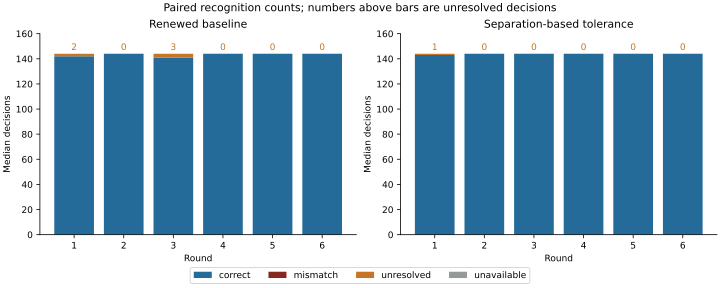
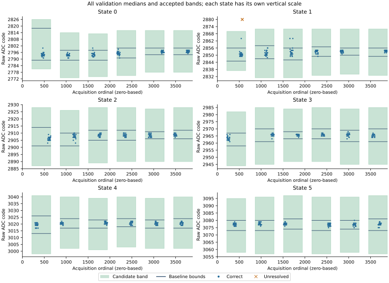

Question and rationale
Can bounded use of the separation between reference bands improve recognition while preserving rejection of ambiguous observations?
The width-retention return recovered 3,888 observations. Renewed baseline and retained-width recognition each produced 856 correct and eight unresolved median decisions, with no wrong assignments. Retention widened 25 of 36 intervals, but none of the eight exceptions occurred in an interval that changed. Earlier reference width therefore did not address the observed coverage gaps in that boot.
At one exception, state 0 produced median 2,816 against a baseline band of 2,791–2,799, while state 1 began at 2,845. Rejected medians occurred in the space between accepted bands. This motivates using a bounded part of that separation instead of relying on an earlier reference excursion to widen a band. The unassigned space is not proof of physical state membership; additional acceptance may also create wrong assignments.
This experiment changes the recognition rule while retaining the electrical requests and observation sequence. It does not change the definition of Seigsit, the senary foundation or Hyphos. The original protocol specified one prospective boot followed by assessment. Its result motivated one unchanged-rule repetition; both returns are reported below.
Declared method
Six rounds retain six reference holds of 36 raw readings and six validation holds of 72 readings. Non-overlapping groups of three provide 12 reference medians and 24 validation medians per state per round: 3,888 raw observations and 864 validation medians per boot. All six rounds enter the primary paired comparison. The candidate uses only the current round's references. Numbers in this account are decimal unless prefixed.
Control codes remain 90, 93, 96, 99, 102 and 105; the baseline guard remains two ADC counts and the pre-ADC delay remains 1,000 microseconds. The reference/validation order, clear/trigger/status/read sequence, operating checks and restorations are unchanged. No additional control request, ADC conversion, retry or discarded observation is introduced. Both recognizers receive the same median without the requested validation identity.
| Rule | Accepted interval | Unavailable calibration |
|---|---|---|
| Renewed baseline | Current reference minimum minus two through maximum plus two | Existing overlap and range rejection |
| Separation-based candidate | Baseline interval expanded by one third of each neighbouring unassigned gap | Invalid baseline ADC range or insufficient separation |
For state s, let a[s] = minimum reference median − 2 and b[s] = maximum reference median + 2. The candidate requires every baseline bound to be within 0–65,535 and every neighbouring pair to leave at least one unassigned integer code. For pair s, G[s] = a[s+1] − b[s] − 1 and E[s] = floor(G[s] / 3). Increase b[s] by E[s] and decrease a[s+1] by E[s]. The remaining unassigned interval contains G[s] − 2E[s] integer codes, at least one third of the original gap.
State 0's outer lower bound is max(0, a[0] − E[0]); state 5's outer upper bound is min(65,535, b[5] + E[4]). These finite limits prevent acceptance extending indefinitely beyond the reference states. Saturation is confined to the outer limits of the recorded 16-bit code domain; this does not assert an independently established ADC resolution. Invalid baseline bounds or separation reject the whole candidate calibration; no accepted state is selected from a rejected calibration.
The one-third allocation divides an interior gap into a left allowance, a retained rejection region and a right allowance. Integer rounding preserves any remainder in the rejection region. It is a fixed design choice, not a measured uncertainty bound or a fraction selected by maximizing replay accuracy. No division parameter is fitted during acquisition. Reference observations alone determine every bound; validation values never update calibration.
For the recorded example, G = 2,845 − 2,799 − 1 = 45 and E = 15. The candidate would extend state 0's upper bound to 2,814, leaving the observed value 2,816 unresolved. The proposed rule therefore does not guarantee removal of every known exception.
Predefined assessment
Acquisition integrity: recover all 3,888 observations in sequence, control and ADC diagnostics, six round restorations, final restoration and pin release. Independently reconstruct both rules' calibrations and all saved decisions. Incomplete acquisition cannot pass.
Primary comparison: report the full paired outcome table for all 864 medians, by state and round. Descriptive improvement requires more correct decisions, fewer unresolved-plus-unavailable decisions and no additional wrong assignments relative to the renewed baseline. Retain every regression and every unavailable decision; consecutive observations are not independent boots.
Complete recognition: all six candidate calibrations must be accepted and all 864 candidate decisions correct. This is separate from descriptive improvement. Report how many decisions were accepted only through interval expansion, including wrong assignments introduced by that expansion.
Separation and cost: retain reference extrema, centres, final bounds, both widths, rejection status and calibration counters. Report all five rejection-gap sizes and both outer limits per round, calibration age, decision counter intervals and total acquisition/recording duration. Every added acceptance remains traceable to its raw triple, baseline outcome and candidate interval.
A single prospective boot evaluates this defined comparison on the current apparatus. Repetition or a different rule requires a subsequent decision with this result preserved; no automatic three-boot commitment is made. Independent analogue conversion freshness and absolute voltage accuracy remain outside the demonstrated scope.
Execution and recording
The gap-calibration component contains 108 literal AArch64 instructions. The existing paired dispatch calls the unchanged baseline acquisition, then this candidate on the same reference or validation input. The dispatcher supplies a previous-record pointer for the preceding width experiment; this candidate does not read it. No width history affects its output.
The existing EEPROM loader enters the SEIGRASM image. Acquisition, reference calibration, recognition, restoration and SD sector recording execute as the project's literal instructions. PC image packaging copies those instruction bytes and initializes data, without a foreign target compiler or assembler. The EEPROM entry dependency remains; the experiment does not replace firmware or establish a Hyphos-made Seigsit.
Configuration schema 9 selects this rule and preserves the paired journal layout: six 48-word candidate calibration records and 864 eight-word candidate decisions. Each calibration retains bounds, status, availability, completion counter, current midrange centres, final left/right widths and reference extrema. Each decision retains status, identity, availability, measured median, decision counter, calibration counter and round. Full section 3 contains 49,056 words; an early stop before completion of the first reference phase retains 384 words. Maximum journal occupancy remains 29,818 sectors within 32,704 reservations.
The independent PC assessment reconstructs the fixed rule and checks every recorded candidate decision. It also counts observations accepted only by expansion. Instruction and integration checks cover integer rounding, rejection gaps, outer saturation, invalid inputs, untouched source memory, absent history dependence, wrong assignments, reference-only calibration and failure recording. These supplied-input checks do not qualify physical recognition.
Replay of preceding observations
The fixed rule was applied to four existing acquisitions after its one-third allocation was selected. Candidate correct counts were 864, 863, 863 and 863 out of 864, compared with baseline counts of 860, 856, 855 and 856. There were 26 additional correct decisions, three remaining unresolved decisions and no wrong assignments. All 24 candidate calibrations reconstructed from those references were accepted; the literal calibration instructions matched the independent calculation.
These are retrospective development checks. The candidate was not executed during those acquisitions, and their validation observations helped motivate this investigation. They cannot qualify the new physical comparison or establish recognition reliability. The prospective result below assesses the frozen rule on newly acquired observations.
First preparation and procedure
Preparation 835DF8229B5D completed its one planned prospective boot. Before installation, all 240 supplied-input checks passed with unchanged source hashes, and the complete 64 MiB write/readback matched the prepared image. The returned record meets the declared acquisition, descriptive-improvement and complete-recognition criteria for this boot.
Preparation manifest; instruction and integration validation; SD write/readback; retrospective development replay; image, protocol and source hashes.
This run uses the shared SD acquisition procedure. No deviation was reported. External power duration was not separately measured. Raw captures, instruction snapshots and complete SD images remain in the private archive.
Second boot: unchanged-rule repetition
The first boot recognized all 864 validation medians, including ten additional correct assignments, while its smallest observed candidate margin was one ADC code. One additional boot tests whether complete recognition recurs with newly acquired references. The rule, electrical requests, observation order and assessment criteria remain fixed.
Preparation 080CFAF98DE3 completed boot 2. Full 64 MiB write/readback verification matched the prepared image. All 31 instruction regions and all experimental parameters match the first preparation. Only the acquisition identity and empty journal reservations change. The original image was reproduced byte for byte from its saved nonce, and every source covered by the existing 240-check validation record was reverified before packaging.
Apply the same per-boot criteria to all 864 paired medians, retaining every wrong, unresolved and unavailable decision. Report both boots separately, including calibration rejection, all remaining gaps, minimum acceptance margins and added acceptances. A pooled total cannot qualify a failed boot. This adds one repetition after assessment of the original single-boot protocol; further repetitions are not scheduled.
The shared SD procedure applies. Preparation comparison; manifest; write/readback record; image, protocol and source hashes. Boot 2 met acquisition-integrity and descriptive-improvement criteria; its single unresolved median did not meet the complete-recognition criterion.
Comparison across two boots
Both acquisitions completed, yielding 7,776 raw observations and 1,728 paired validation medians. The same instruction regions, electrical settings and one-third rule were used with separate recording identities and newly acquired references.
| Boot | Rule | Correct | Wrong | Unresolved | Unavailable |
|---|---|---|---|---|---|
| 1 | Renewed baseline | 854 | 0 | 10 | 0 |
| 1 | Separation-based tolerance | 864 | 0 | 0 | 0 |
| 2 | Renewed baseline | 859 | 0 | 5 | 0 |
| 2 | Separation-based tolerance | 863 | 0 | 1 | 0 |
Descriptive improvement occurred in both boots: ten and four additional correct assignments, respectively, with no regressions or wrong assignments. Complete recognition occurred in boot 1 and did not recur in boot 2. The combined candidate count is 1,727 correct and one unresolved, compared with 1,713 correct and 15 unresolved for the baseline. These pooled counts do not qualify the failed complete-recognition criterion or constitute 1,728 independent repetitions.
All twelve candidate calibrations were accepted. Remaining rejection gaps contained 12–17 unassigned integer codes in boot 1 and 10–18 in boot 2. The minimum distance of a correctly assigned median from its own candidate boundary was one code in boot 1 and six codes in boot 2. Boot 2's unresolved median lies ten codes above its state-1 upper bound; excluding that rejection from the accepted-margin statistic does not remove its failure.
Boot 1: prospective result
All 3,888 raw observations were recovered in sequence. Six round restorations, final restoration and pin release completed with successful recorded status. The independent reconstruction matched all six candidate calibrations and all 864 candidate decisions.
| Rule | Correct | Wrong | Unresolved | Unavailable |
|---|---|---|---|---|
| Renewed baseline | 854 | 0 | 10 | 0 |
| Separation-based tolerance | 864 | 0 | 0 | 0 |
The paired table contains 854 correct-to-correct and ten unresolved-to-correct decisions; every other transition has count zero. All ten additional acceptances were correct relative to the requested state. No baseline-correct decision regressed. Acquisition integrity, descriptive improvement and complete recognition each met the predefined criterion for this single prospective boot.

| Round | Baseline correct | Baseline unresolved | Candidate correct | Unassigned codes: 0/1; 1/2; 2/3; 3/4; 4/5 | Outer limits |
|---|---|---|---|---|---|
| 1 | 141 | 3 | 144 | 16; 16; 16; 12; 16 | 2,774–3,104 |
| 2 | 139 | 5 | 144 | 16; 16; 15; 15; 17 | 2,776–3,098 |
| 3 | 142 | 2 | 144 | 17; 17; 17; 17; 16 | 2,776–3,096 |
| 4 | 144 | 0 | 144 | 16; 16; 17; 17; 17 | 2,775–3,096 |
| 5 | 144 | 0 | 144 | 16; 16; 17; 16; 17 | 2,772–3,097 |
| 6 | 144 | 0 | 144 | 17; 17; 17; 16; 17 | 2,775–3,097 |
Wrong and unavailable median counts were zero in every round under both rules. Candidate bounds expanded all 36 state-round intervals while leaving 12–17 unassigned integer codes between neighbouring bands. The smallest retained gap was between states 3 and 4 in round 1. Outer limits are the lower bound of state 0 and upper bound of state 5; intermediate rejection regions remain unassigned.
| State | Baseline correct | Baseline unresolved | Candidate correct |
|---|---|---|---|
| 0 | 140 | 4 | 144 |
| 1 | 140 | 4 | 144 |
| 2 | 143 | 1 | 144 |
| 3 | 144 | 0 | 144 |
| 4 | 143 | 1 | 144 |
| 5 | 144 | 0 | 144 |
The retained diagnostic paths distinguish raw-reading and median calibration. Renewed raw-reading calibration was rejected for overlapping reference bands in rounds 1 and 2, yielding 864 unavailable raw decisions; the remaining raw decisions were 1,716 correct and 12 unresolved. Initial retained median calibration yielded 852 correct and 12 unresolved. These paths use different reference distributions and denominators; complete median recognition does not establish complete raw-reading recognition.
Recorded counters span 136.166 seconds across acquisition and 1,310.130 seconds from trial start to the final section, including recording. Candidate decisions span 101.383–101.700 milliseconds from the first reading's selection counter; calibration age is 0.109–15.123 seconds. Candidate counters follow the corresponding baseline counters by 8.796–10.685 microseconds for decisions and 43.741–46.056 microseconds for calibration. These intervals include dispatch and record operations between counters, rather than isolating the calibration or recognition instructions.
Boot 1: added coverage and raw observations

| Final ordinal | Round | State | Three readings | Median | Baseline band | Candidate band |
|---|---|---|---|---|---|---|
| 326 | 1 | 4 | 3,040; 3,018; 3,040 | 3,040 | 3,005–3,027 | 2,993–3,041 |
| 515 | 1 | 1 | 2,852; 2,856; 2,864 | 2,856 | 2,845–2,855 | 2,830–2,870 |
| 647 | 1 | 2 | 2,944; 2,908; 2,912 | 2,912 | 2,902–2,910 | 2,887–2,926 |
| 1,040 | 2 | 0 | 2,816; 2,783; 2,800 | 2,800 | 2,791–2,798 | 2,776–2,813 |
| 1,067 | 2 | 0 | 2,796; 2,800; 2,800 | 2,800 | 2,791–2,798 | 2,776–2,813 |
| 1,094 | 2 | 1 | 2,847; 2,856; 2,856 | 2,856 | 2,845–2,854 | 2,830–2,869 |
| 1,100 | 2 | 1 | 2,881; 2,864; 2,850 | 2,864 | 2,845–2,854 | 2,830–2,869 |
| 1,148 | 2 | 1 | 2,864; 2,850; 2,856 | 2,856 | 2,845–2,854 | 2,830–2,869 |
| 1,601 | 3 | 0 | 2,820; 2,800; 2,794 | 2,800 | 2,791–2,798 | 2,776–2,813 |
| 1,613 | 3 | 0 | 2,793; 2,783; 2,783 | 2,783 | 2,791–2,798 | 2,776–2,813 |
Ordinals are zero-based raw-acquisition positions; rounds are numbered 1–6. Four added acceptances occurred in state 0, four in state 1, one in state 2 and one in state 4. All occurred during the first three rounds. At ordinal 326, two readings of 3,040 produced a median 13 codes beyond the baseline upper bound, but one code inside the candidate upper bound. At ordinal 1,613, two readings of 2,783 produced a median below the baseline lower bound, yet within the candidate. Expansion covered excursions on both sides without changing the samples.
Counter-derived CPU frequency ranged from 1,499,970,336 to 1,500,028,660 Hz; the recorded thermal register ranged from 67,309 to 67,333. These raw observations do not identify a thermal or electrical cause for the excursions.
Boot 2: unchanged-rule result
All 3,888 raw observations were recovered in sequence. Six round restorations, final restoration and pin release completed with successful recorded status. Independent reconstruction matched every calibration and saved decision.
The paired comparison contains 859 correct-to-correct, four unresolved-to-correct and one unresolved-to-unresolved decision. No other transition occurred. The candidate recognized 863/864 medians, improving the baseline's 859/864 while retaining one rejection.

| Round | Baseline correct | Baseline unresolved | Candidate correct | Candidate unresolved | Unassigned codes: 0/1; 1/2; 2/3; 3/4; 4/5 | Outer limits |
|---|---|---|---|---|---|---|
| 1 | 142 | 2 | 143 | 1 | 10; 16; 15; 15; 16 | 2,781–3,095 |
| 2 | 144 | 0 | 144 | 0 | 16; 14; 18; 16; 16 | 2,773–3,096 |
| 3 | 141 | 3 | 144 | 0 | 17; 16; 18; 16; 18 | 2,774–3,097 |
| 4 | 144 | 0 | 144 | 0 | 16; 17; 18; 17; 16 | 2,775–3,096 |
| 5 | 144 | 0 | 144 | 0 | 17; 17; 17; 17; 18 | 2,778–3,096 |
| 6 | 144 | 0 | 144 | 0 | 16; 17; 16; 16; 16 | 2,778–3,097 |
Candidate calibration expanded all 36 state-round intervals. All raw-reading and median baseline calibrations were accepted on this boot. Retained raw recognition returned 2,562 correct and 30 unresolved readings; renewed raw recognition returned 2,567 correct and 25 unresolved. Retained median recognition returned 859 correct and five unresolved, matching the renewed median totals. These diagnostic paths contain no wrong or unavailable decisions.
By requested state, the baseline returned 143, 140, 144, 144, 144 and 144 correct medians for states 0–5; the candidate returned 144, 143, 144, 144, 144 and 144. All remaining median decisions were unresolved. States 0 and 1 accounted for the four added correct assignments; the sole remaining rejection occurred in state 1.
Recorded counters span 136.189 seconds across acquisition and 1,310.222 seconds from trial start to the final section, including recording. Decision spans were 101.416–101.711 milliseconds and calibration age was 0.109–15.125 seconds. Candidate counters followed baseline counters by 8.852–10.481 microseconds for decisions and 43.889–46.093 microseconds for calibration. These intervals include intervening dispatch and recording operations. External power duration was not separately measured.
Boot 2: coverage and the remaining rejection

| Final ordinal | Round | State | Three readings | Median | Baseline band | Candidate band | Candidate outcome |
|---|---|---|---|---|---|---|---|
| 545 | 1 | 1 | 2,864; 2,849; 2,880 | 2,864 | 2,845–2,856 | 2,837–2,870 | Correct |
| 569 | 1 | 1 | 2,881; 2,850; 2,880 | 2,880 | 2,845–2,856 | 2,837–2,870 | Unresolved |
| 1,607 | 3 | 0 | 2,793; 2,800; 2,800 | 2,800 | 2,789–2,798 | 2,774–2,813 | Correct |
| 1,658 | 3 | 1 | 2,880; 2,864; 2,850 | 2,864 | 2,846–2,856 | 2,831–2,872 | Correct |
| 1,724 | 3 | 1 | 2,851; 2,864; 2,880 | 2,864 | 2,846–2,856 | 2,831–2,872 | Correct |
At ordinal 569, readings 64–66 of the first state-1 validation hold were 2,881; 2,850; 2,880. Their median, 2,880, lies ten codes above state 1's upper limit of 2,870 and seven below state 2's lower limit of 2,887. The retained rejection interval is 2,871–2,886. No neighbouring state was assigned.
The immediately preceding triple was 2,849; 2,850; 2,851 (median 2,850); the following triple was 2,851; 2,856; 2,849 (median 2,851). Both were correct under both rules. This local sequence shows a rejected median bounded by accepted medians while the requested state was held. It does not distinguish rail variation, conversion behavior and readout effects. The recorded sample diagnostics reported no error in the rejected triple.
Counter-derived CPU frequency ranged from 1,499,969,891 to 1,500,029,438 Hz; the raw thermal register ranged from 67,304 to 67,332. No causal temperature inference follows from these ranges.
Interpretation and next question
Separation-derived tolerance improved nominal-request recognition in both prospective boots. Fourteen previously unresolved medians became correct assignments, with no baseline-correct regression and no wrong assignment. The benefit therefore recurred under an unchanged rule with newly measured references.
Complete recognition did not recur. Boot 1 accepted every median, including one only one ADC code inside its boundary; boot 2 retained one state-1 median in the rejection gap. Widening an acceptance band to include that observation would change the tested rule and spend more of the separation margin. This return provides no physical state-membership evidence for all intermediate codes.
The next proposed investigation concerns the temporal persistence of excursions and bounded reacquisition after an unresolved decision, retaining the present calibration rule. The observed return to medians of 2,850 and 2,851 motivates comparing a fixed three-reading decision with a predeclared, limited additional acquisition. Such a procedure must retain the first rejection, every additional sample, wrong assignments, added latency and unresolved cases; it must not retry until a preferred answer appears or use the requested identity to select an answer.
That hypothesis has not been tested by these boots: neither executed conditional reacquisition. Its limits and controls require a new protocol. Independent analogue conversion freshness, intermediate-state behavior and the cause of the excursions remain unresolved.
Acquisition and provenance
Both captures are preserved with matching repeated reads and unchanged boot files. The first acquisition is detailed here; the second acquisition retains its own identity, source snapshots and assessments.
Two complete 64 MiB reads matched. The return contains 29,818 journal sectors and 2,886 unused reservations. Windows reported Healthy / OK. The MBR, partition geometry and both boot files are unchanged; the FAT copies agree and dirty indicators are unset. Seven sectors differ outside the journal and are retained in the volume assessment. Target-side final journal readback is not proven; the matching PC reads establish the recovered bytes.
raw capture; read-only acquisition; decoded records; paired assessment; all medians, bounds and counters; boot-volume comparison; run conditions; capture and assessment hashes.
All five physical-return checks passed, reconstructing the paired result from the raw image and rejecting altered bounds, decisions and counters. Five preceding width-return checks also passed after sharing the plotting routines. Capture SHA-256: 55f65fa41e1e53df081486ca1f6ba7e2cad28907c0cd53c9d3851cb1163248f6.
Boot 2: acquisition and provenance
Two complete 64 MiB reads matched. The return contains 29,818 journal sectors and 2,886 unused reservations. Windows reported Healthy / OK. The MBR, partition geometry and both boot files are unchanged; FAT copies agree and dirty indicators are unset. Seven sectors differ outside the journal and remain in the volume assessment. Target-side final journal readback is not proven.
raw capture; read-only acquisition; decoded records; paired assessment; all median groups and bounds; two-boot comparison; boot-volume comparison; run conditions; capture and source hashes.
Nine return checks reconstruct both acquisitions, reproduce the series comparison, retain the unresolved triple and reject duplicate acquisitions or changed settings. The original first-boot checks also reject altered calibration, decision and counter records. Capture SHA-256: e04720667087f4093f08b1e35e785d665ed38021a4ac91bb3113714ab1a02282.
Interpretation limits
The candidate expands numerical acceptance around observed reference states. It does not establish the electrical state of every code inside those intervals. Unknown disturbances, a shifted state distribution or a conversion artifact could be assigned to a neighbouring state after expansion. Raw triples, wrong assignments and unresolved intervals remain visible for that reason.
The six nominal requests test recognition under the existing sequence. No independent voltage standard or additional physical boundary challenge is introduced. The favorable result supports further testing of boundary behavior and independent boots; it does not qualify the full carrier or its future deployment across silicon clusters.